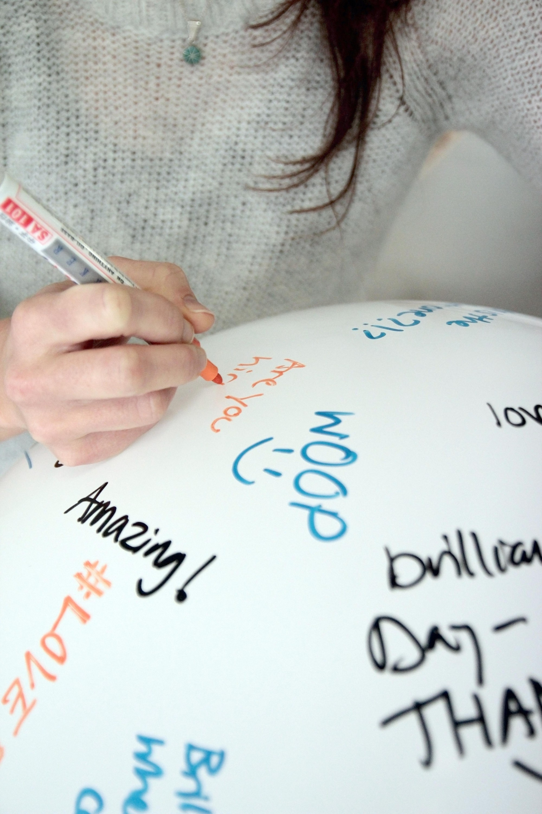
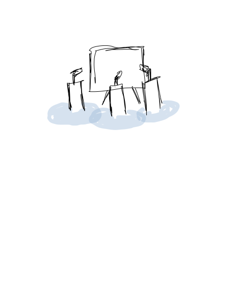
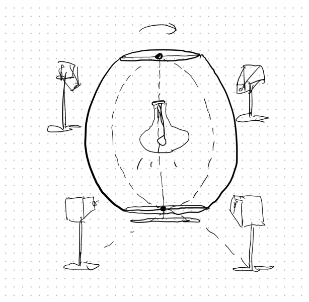

final interaction project
description
guiding questions
- list item here
design process + methods
Process info here
prototype 1 proposal
interface for interaction
A shared canvas or making surface, where strangers and passerbys can contribute to a shared piece of art, while still maintaining a safe and comfortable distance.
This point of interaction should provide opportunities for person-to-person, person-to-group, and person-to-public. We hope that this installation will culminate in a lasting artifact, created by the collective curiosity and joy of park-goers.
materials necessary for testing & iteration
- interface
- canvas / surface to make on
- easel
- various bubble makers
- colored bubble solution
- eventually, podiums to mount bubble makers in front of our making surface
- wayfinding / indicators
- colored indicators around the podiums ("personal bubbles," if you will)
- perhaps, if clearer indication is necessary, additional colored symbols on the park grounds
prototype 1: further research & concept sketches




credits
This project was created based on the
references
- “Cottonwood.” Missouri Department of Conservation. Sept 8, 2021. https://mdc.mo.gov/discover-nature/field-guide/cottonwood.
- "Washington Square Park." NYC Parks. Sept 8, 2021. https://www.nycgovparks.org/parks/washington-square-park/history."